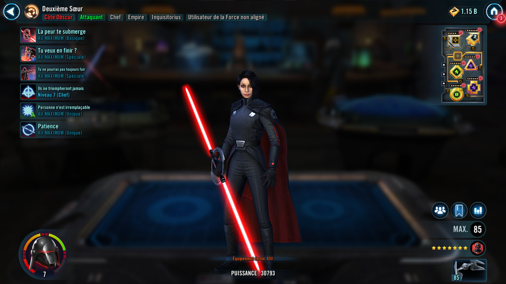

Deal Special damage to target enemy and inflict 1 stack of Purge (stacking, max 6) if target enemy is a Jedi, which can't be resisted. Additionally, this attack has a 30% chance to inflict 1 stack of Purge to target enemy, which can't be resisted. Purge: Increased effects from enemies that utilize Purge; Purge lasts until the end of the encounter and can't be copied, evaded, or prevented
Deal Special damage to target enemy. This ability has +150% Defense Penetration. If target enemy is inflicted with Purge, this ability has +100% Critical Chance and +50% Critical Damage.
Consume up to 5 stacks of Purge. If any stacks of Purge were consumed, Second Sister gains 140% Critical Damage for 2 turns and this ability has a 50% chance to Stun for 1 turn. If 5 stacks of Purge were consumed, Stun target enemy for 1 turn, which cannot be resisted. For each stack of Purge consumed, remove 20% Turn Meter from target enemy and Second Sister gains 10% Turn Meter, which can't be evaded. Deal Special damage to target enemy.

At the start of battle, Empire allies gain 5% Offense and Inquisitorius allies gain an additional 30% Offense. Other Inquisitorius allies have a 30% chance to inflict a stack of Purge when using a Basic ability, which can't be copied or resisted. Whenever an ally is Marked, Mark all other allies (excluding Stealthed allies) who don't have it for 2 turns, which can't be copied, dispelled, or prevented.
omicron Boost : While in Territory Wars: Enemies start the battle with two stacks of Purge. Jedi enemies can't recover Health or Protection from Jedi Unique abilities (excludes Galactic Legends).

Second Sister gains +50% Critical Damage. Her Special abilities can't be evaded when attacking an enemy with one or more stacks of Purge. Whenever an enemy or Empire ally is defeated, Second Sister gains bonuses for the rest of the encounter.
First enemy or Empire ally: +35 Speed
Second enemy or Empire ally: +100% Defense Penetration
Third enemy or Empire ally: +50% Critical Damage

At the start of battle, if all allies (minimum 3) are Inquisitorius, this character gains 20% Max Health, Max Protection, and Potency. While an ally is Marked, they have +35% Defense. Whenever an enemy damages this character with an attack while attacking out of turn, that enemy gains a stack of Purge (max 6), which can't be evaded or resisted. Whenever Purge is consumed or dispelled on an enemy, this character gains 3% Turn Meter.